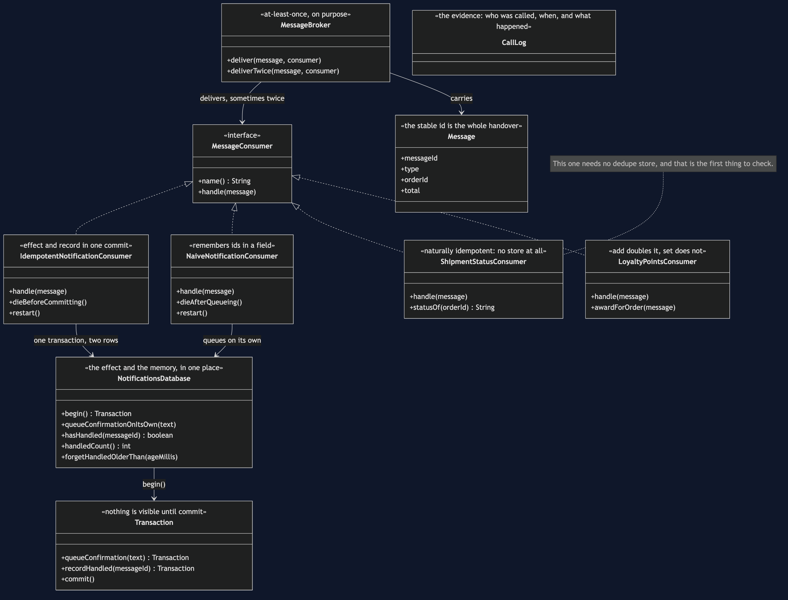
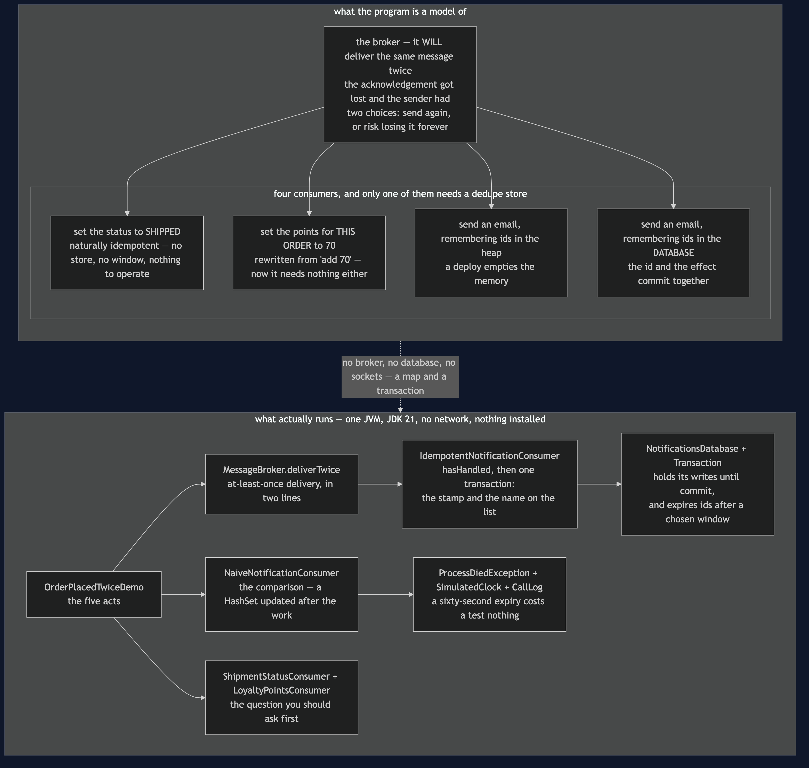
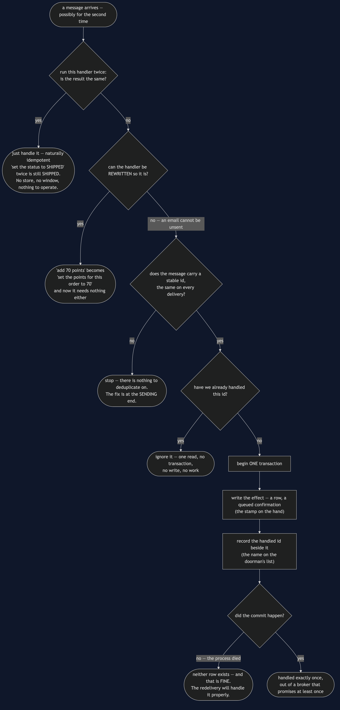
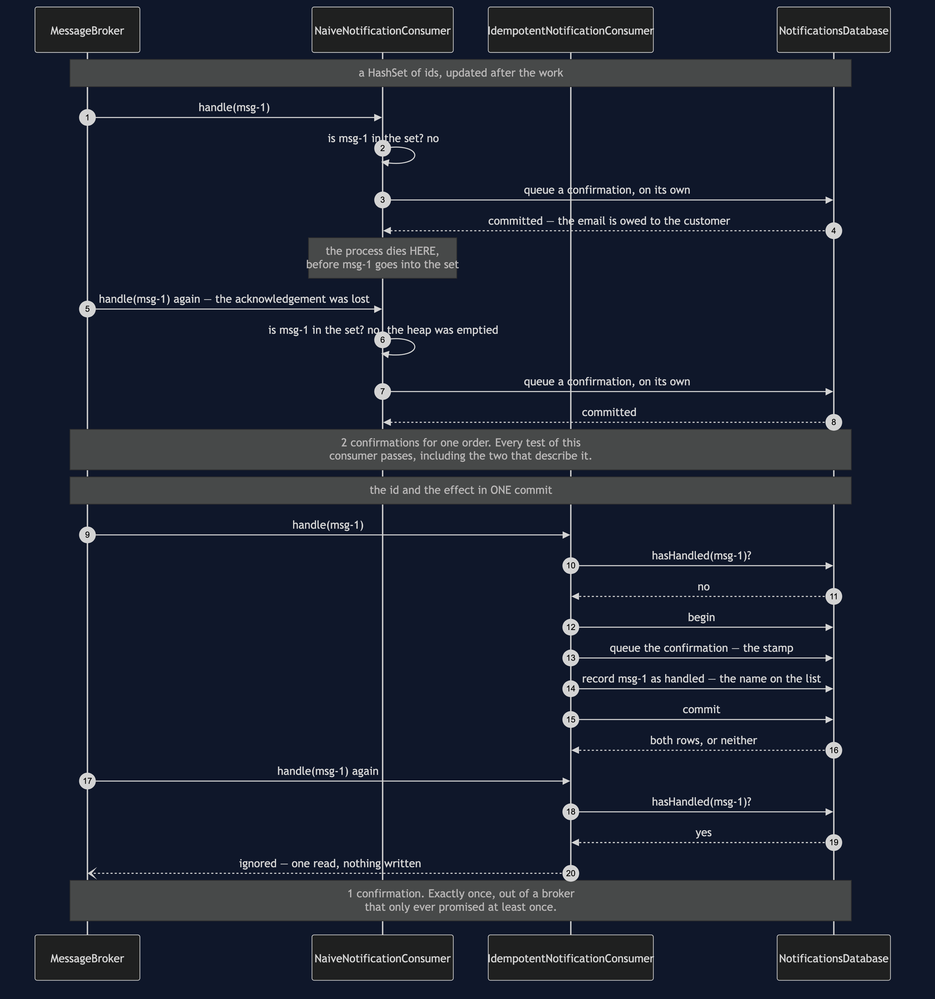
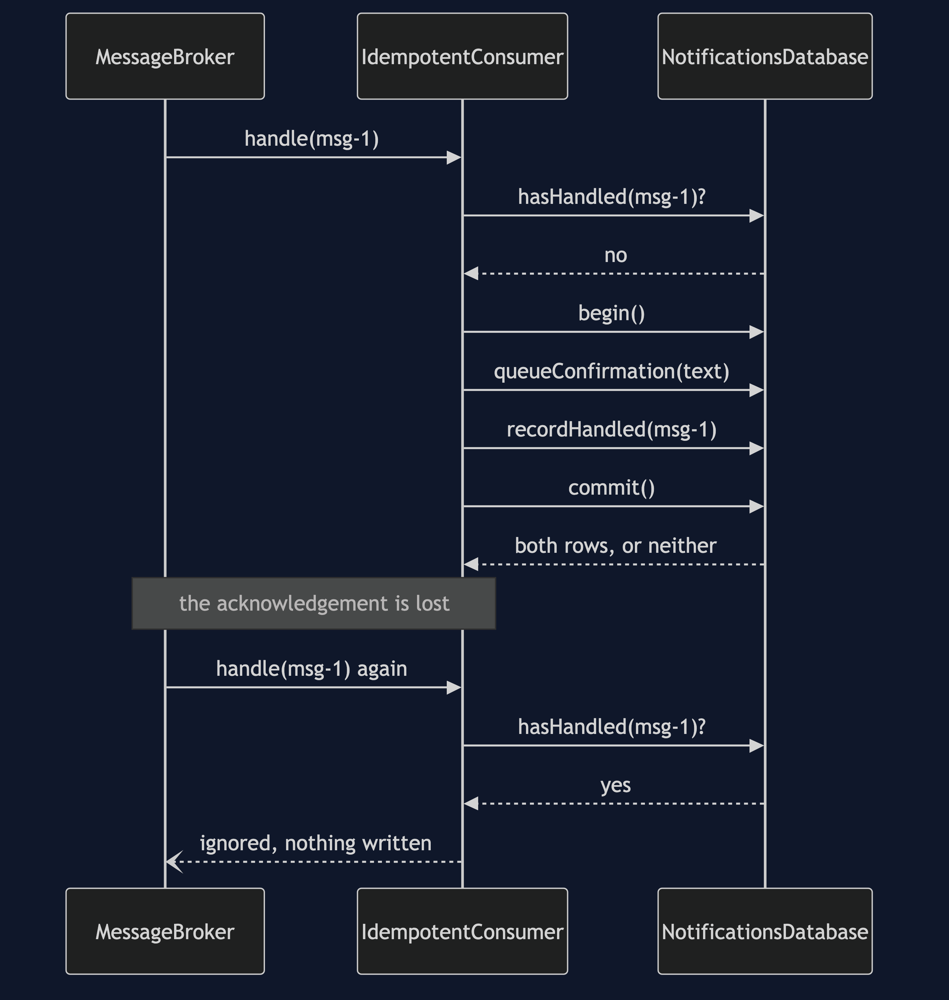
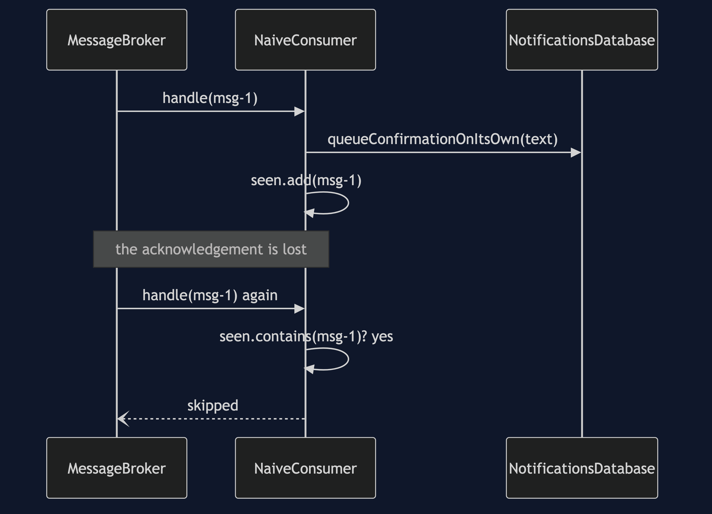
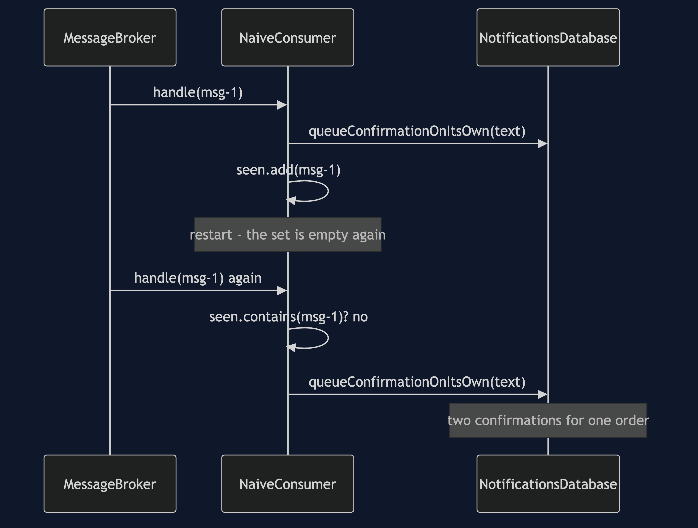
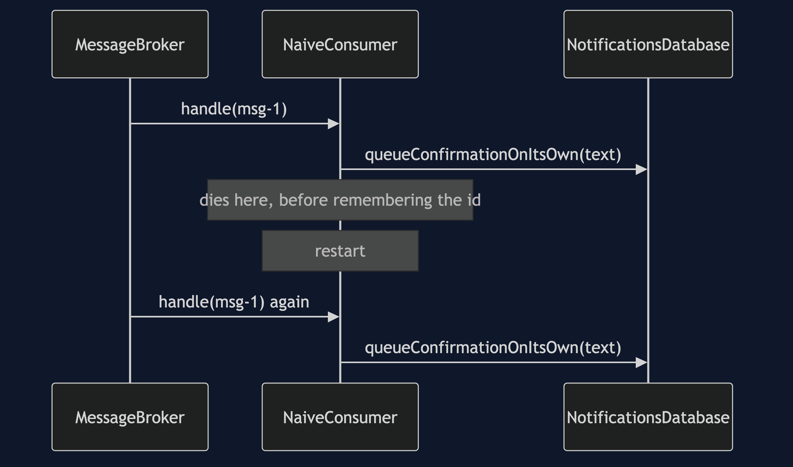
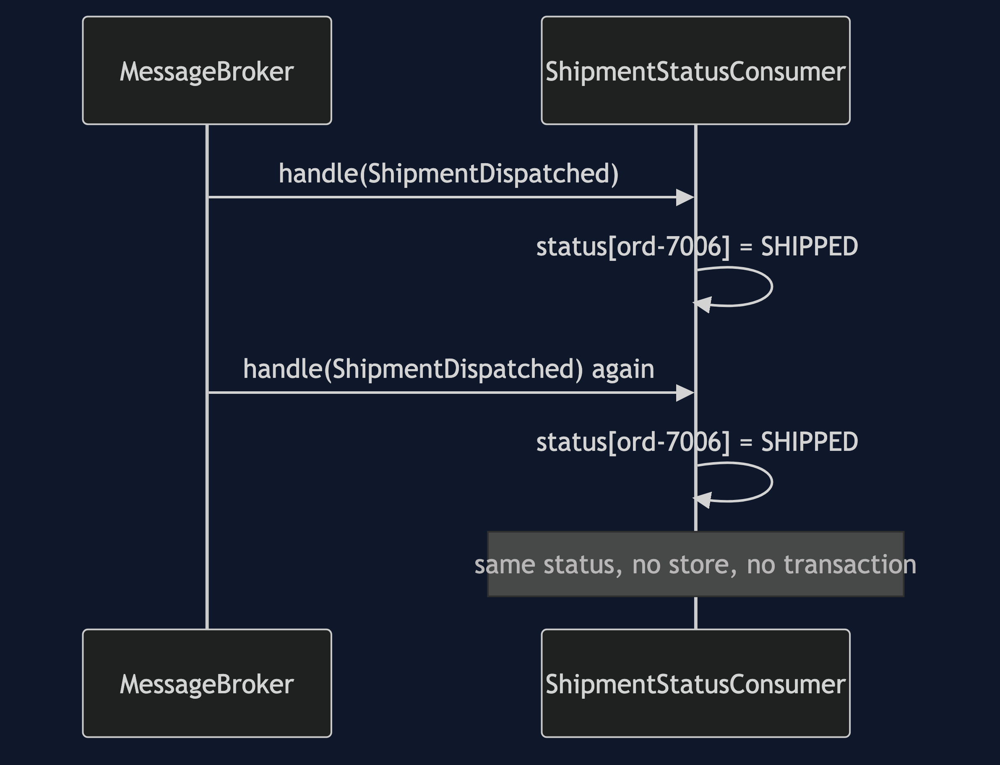

Idempotent Consumer
In plain words: since the same message can arrive twice, write down the id of every message you have handled, and if one arrives whose id you already have, throw it away. Handling it twice then has the same effect as handling it once — which is all the word idempotent means.
Everyday analogy: a club doorman with a list of everyone he has already stamped. Somebody comes back to the door claiming they have not been let in yet; the doorman checks the list, finds their name, and does not stamp them a second time. The subtle part is the part that goes wrong in real code: the name has to go on the list at the same moment as the stamp goes on the hand. Stamp first and write the name afterwards, and a doorman who is interrupted in between will stamp the same person twice.
In the shop, Notifications receives OrderPlaced twice, because the outbox relay of the previous pattern guarantees at-least-once delivery. Two emails is embarrassing. Had the consumer been Payments, it would have been two charges.
Why the duplicate is not anybody's fault
A sender publishes a message and waits for an acknowledgement. If the acknowledgement is lost, the sender cannot tell whether the message arrived, and it has exactly two choices: send again, or not. Sending again risks a duplicate; not sending again risks losing the message forever. Every production system chooses the duplicate. So MessageBroker.deliverTwice is not this project being unfair — it is a Tuesday.
The HashSet that nearly works
0ms -> 10ms Notifications OK delivered msg-1
5ms -> 5ms NotifDb COMMIT a confirmation on its own
10ms -> 10ms Broker REDELIVERY msg-1 -- the acknowledgement was lost
10ms -> 20ms Notifications OK delivered msg-1
15ms -> 15ms Notifications SKIPPED msg-1 -- already seen
confirmations queued: 1NaiveNotificationConsumer keeps a HashSet of ids it has seen and updates it after the work. It catches the duplicate, theObviousTestPasses is green, and this is where most implementations stop. Two things are wrong with it, and both only show up in production.
The memory is in the process.
10ms -> 10ms Notifications RESTARTED and its memory of what it has handled is empty
confirmations queued: 2The set lives in the heap, so a deploy empties it. And a restart is often why the acknowledgement was lost in the first place, so a duplicate arriving just after one is common rather than unlucky.
The id is written down after the work.
5ms -> 5ms NotifDb COMMIT a confirmation on its own
5ms -> 5ms Notifications DIED after queueing the email, before remembering the id
confirmations queued: 2A crash in that gap loses the id and keeps the effect. This is the doorman stamping the hand and being interrupted before writing the name.
Both faults have one root: the id and the effect are stored in two different places, so nothing can make them land together. Every test in NaiveNotificationConsumerTest passes, including the two that describe a customer getting two emails for one order.
The pattern
if (database.hasHandled(message.messageId())) {
return; // the doorman's list
}
Transaction transaction = database.begin();
transaction.queueConfirmation(text); // the stamp
transaction.recordHandled(message.messageId());
transaction.commit(); // both, or neither 5ms -> 5ms NotifDb COMMIT 1 confirmation(s) and 1 handled id(s) together
15ms -> 15ms Notifications IGNORED msg-1 -- handled already
confirmations queued: 1, handled ids stored: 1The transaction is the entire pattern. Take it away and the naive consumer is back in one of its two shapes:
- Write the id first and a crash before the work leaves the message remembered as handled and the customer with no email — worse than a duplicate, because nothing will ever retry.
- Write the id afterwards and a crash in between loses it.
Committing them together removes the gap, and both of the failures that beat the HashSet now cost nothing. A restart changes nothing, because nothing was in memory. A crash before the commit writes neither row, so the redelivery handles the message properly — exactlyOnceOutOfAtLeastOnce is the test, and the demo prints it: exactly once, out of a broker that only promises at least once.
The constraint hiding in that transaction
The effect above is a row in a table, which is the only reason it can share a transaction with the id. If the effect were the actual email — a call to an outside provider — it could not, and you would be back to two systems with a gap between them.
The honest answer is the previous pattern's: write a row, and let an outbox relay do the sending. Which is why Transactional Outbox and Idempotent Consumer are taught together and are usually deployed together — one creates the duplicate, the other absorbs it, and each needs the other to be worth having.
Ask first whether you need any of this
status of ord-7006: SHIPPED, orders known: 1ShipmentStatusConsumer handles OrderShipped by setting a status, and it has no dedupe store, no transaction and no expiry policy. Setting a status twice sets the same status. That property is called being naturally idempotent, and it is a different thing from the consumer above, which is not naturally idempotent and has to be made safe by remembering ids.
The test is one question: if I run this twice, is the result the same?
- "set the status to SHIPPED" — yes. Nothing needed.
- "set the stock level to 20" — yes.
- "add 70 loyalty points" — no.
- "send an email" — no, and no rewriting will change that.
And when the answer is no, the next question is whether the handler can be rewritten into one where it is yes:
and one that is not: "add 70 loyalty points" twice
running total: 140 points for a 70 pound order
rewritten as "set the points for this order to 70":
points awarded: 70 after handling it twiceLoyaltyPointsConsumer shows both. Storing points per order and setting them, instead of adding to a running total, makes the handler idempotent with no store, no window and nothing to operate. Reaching for the dedupe table before asking that question is the most common mistake in this whole area.
What the store costs
handled, confirmations queued: 1
a minute later, with a thirty second memory, the same message arrives again: 2The ids cannot be kept forever, so they expire, and the length of the window is chosen rather than derived. Too short and a duplicate arriving after a long broker outage looks new — which theWindowIsAGuess demonstrates as a passing test. Too long and it is a large table somebody has to operate, back up and migrate.
One more requirement worth stating: the message must carry a stable id, the same on every delivery. If it does not, there is nothing to deduplicate on, and the first job is to get one added at the sending end.
One JVM, no infrastructure
No broker, no database, no sockets, and nothing sleeps. MessageBroker.deliverTwice is at-least-once delivery in two lines. SimulatedClock makes a sixty-second wait free, so the expiry window can be tested rather than described. ProcessDiedException stands in for the JVM disappearing — in real life there is no catch block, and the tests say so in a comment where they catch it.
Technologies and versions
Nothing here is a range and nothing is latest: a course that worked last year and does not work today is worse than one that never took the dependency.
| What | Version | Why it is here |
|---|---|---|
| Java | 21 | The repository standard, requested through the Gradle toolchain block |
| Gradle | 9.2.1 | The wrapper in this directory; no separate install needed |
| JUnit 5 | 5.10.2 | The 19 tests, through junit-bom so the Jupiter artefacts cannot disagree |
That is the entire list, and the short version of it is the point. This project has no runtime dependency at all — the dependencies block in build.gradle names nothing but JUnit, and JUnit is testImplementation. There is no Kafka, no RabbitMQ, no Redis, no database and no container; the dedupe store is a map behind a transaction, and the broker is two lines. Every one of the twelve projects in this category is built the same way, so a reader who can run one can run all of them, offline, with a JDK and nothing else.
Learning Material
| File | What it is for |
|---|---|
docs/problem-statement.md | The same confirmation email, twice, and the green test that allowed it |
docs/idempotent-consumer-pattern-explained.md | The full explanation, readable on its own |
docs/class-diagram.md | Four consumers, and where each one keeps its memory |
docs/architecture-diagram.md | Where each of the four consumers keeps its memory, and which of them needs no memory at all |
docs/data-flow-diagram.md | The question to ask before any of the machinery, and what happens on the second arrival |
docs/sequence-diagram.md | The same crash at the same instant, with the id written after the work and then inside it |
docs/uml-diagram.md | The five acts as sequences, including the crash in the gap |
docs/prerequisites.md | What you need first, and what you explicitly do not |
docs/session.md | A one-hour taught session, with the arguments to expect |
docs/animation.html | Twelve steps in a browser, narrated, that you can pause |
docs/youtube.md | Title, description and chapters for publishing |
video/README.md | The sixteen scenes, and why two of them cannot be cut |
video/scenes.py | The script itself, narration and all |
The pattern in one picture

IdempotentNotificationConsumer writes the confirmation and the handled message id in one transaction, so a redelivery is a lookup and nothing else. ShipmentStatusConsumer sits alongside it needing no store at all, as a reminder to ask that question first.
What runs where
The lower half is the literal truth: one JVM, a map behind a transaction. The upper half is the broker and four consumers, arranged as an argument that runs from right to left — from the one that needs everything to the one that needs nothing.

How the data moves
One message arriving twice. The top third of the chart is the part that saves the most work, and two of the four consumers never get past it.

Who calls whom, in order
The same crash at the same instant, twice. Watch when the id is written down: after the work above, inside the same commit below.

All five acts
The full set from docs/uml-diagram.md, in the order that document argues them — which is by argument rather than by number.
Four. One commit covers both. The second delivery is a read and nothing else.

One. A set of ids, and it works. The obvious implementation, catching the ordinary duplicate, with a green test — which is where most implementations stop.

Two. The deploy. The set lives in the heap, and the heap does not survive a restart.

Three. The gap. The email is queued, the process dies, and the id was never written — the stamp on the hand with no name on the list.

Five. The handler that needed none of it. Setting a status to SHIPPED twice sets the same status, and no store was ever required.

Video
A narrated walkthrough across sixteen scenes: why the broker sends it twice, the two ways a set of ids in memory loses, the one commit that fixes both — and the expiry window that is a guess.
Build it with cd video && python3 make_slides.py && ./build_video.sh. The rendered file is not committed; the sources are.